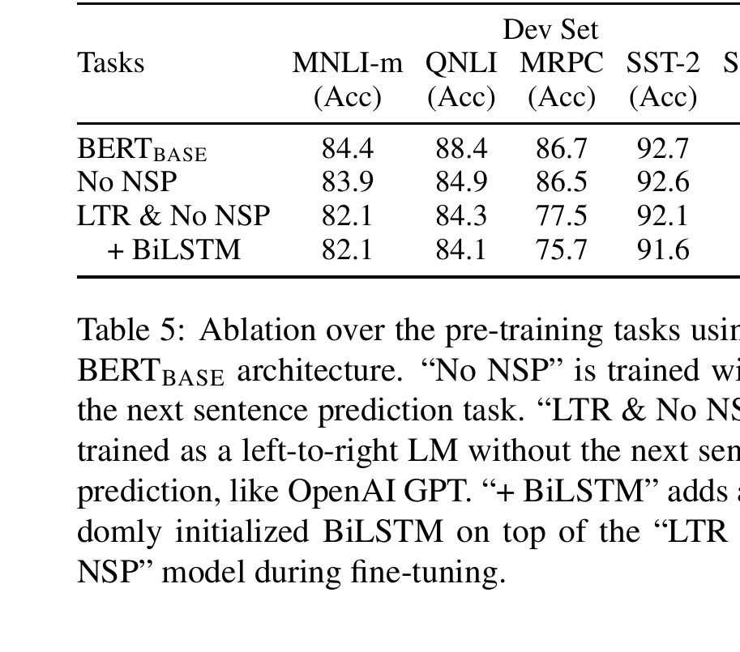
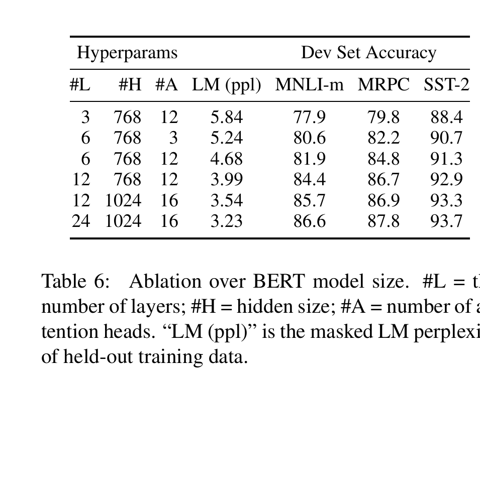
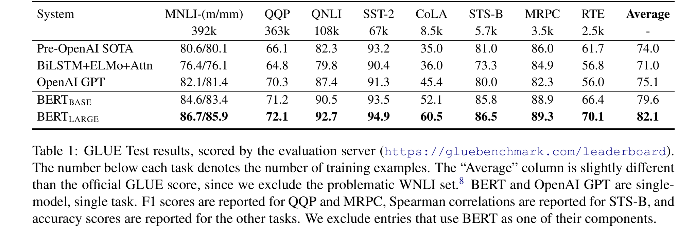
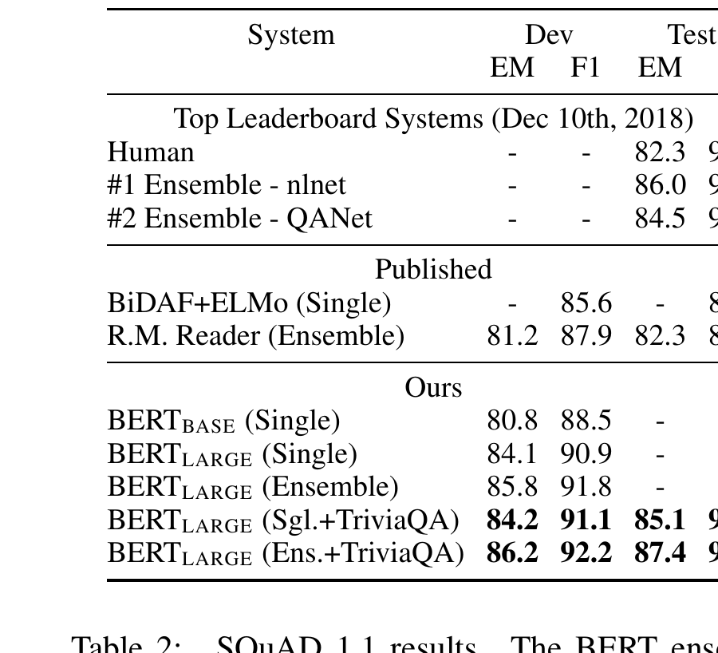
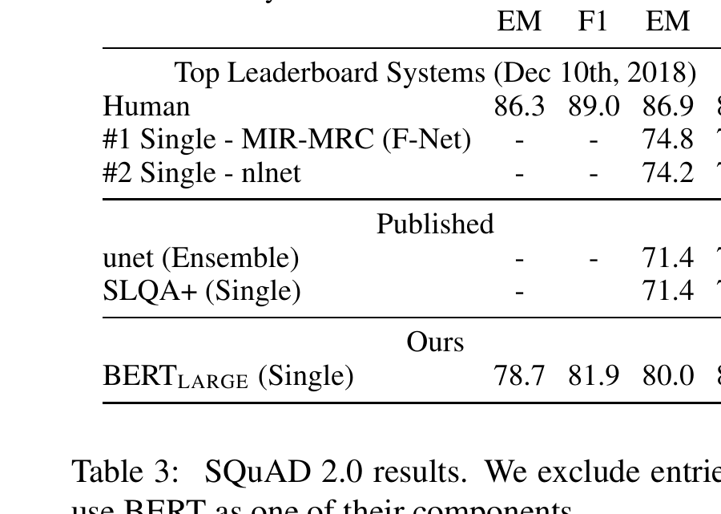
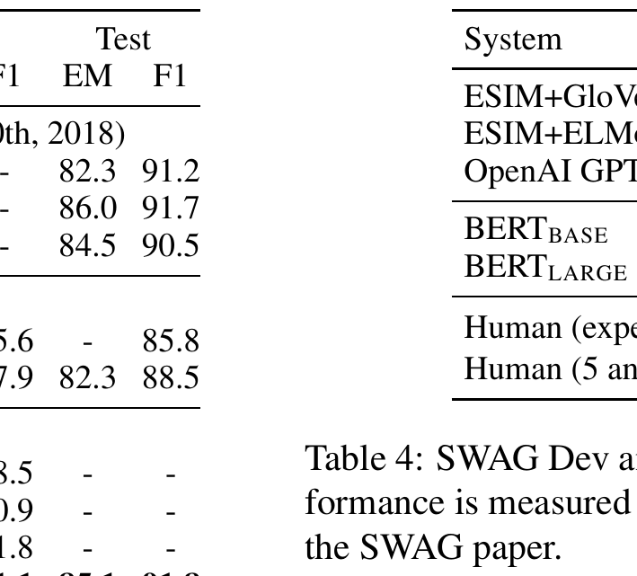
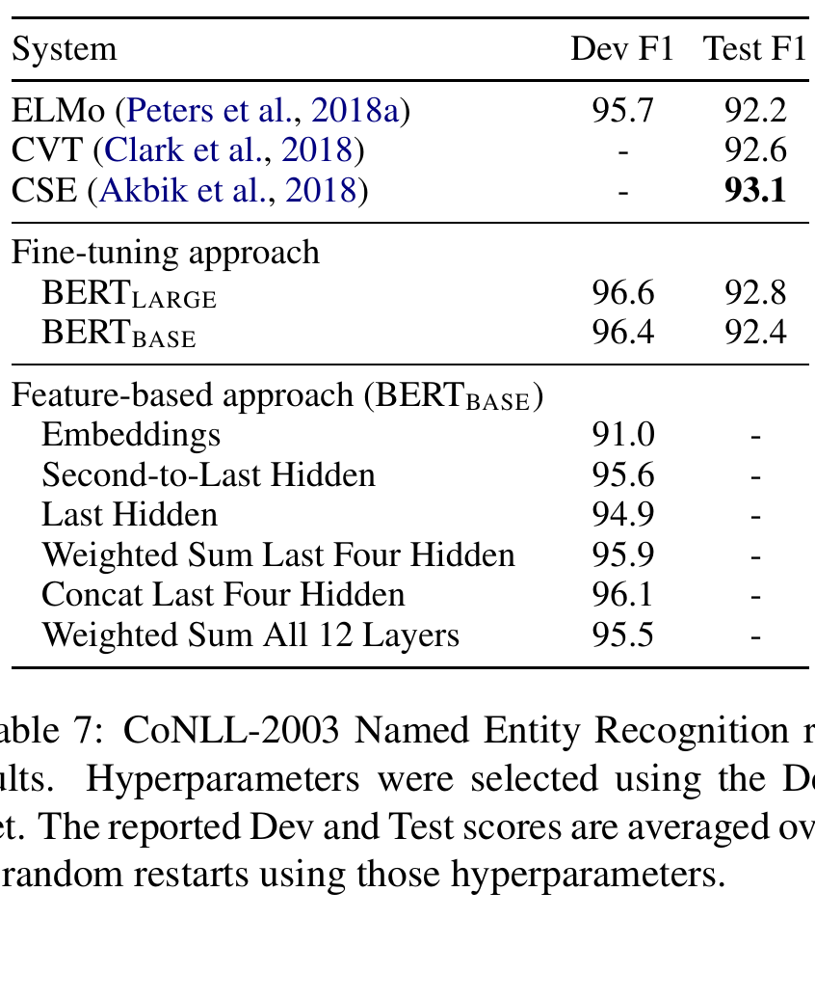

Bidirectional language-model pretraining
A missing word can teach a model to read both ways.
BERT turns ordinary text into its own exercise book: cover a few tokens, then require a Transformer encoder to recover them from clues on both sides. The resulting reader can be adapted to many tasks.
Learning promise
Raw sentences already contain an answer key
Imagine proofreading “The doctor prescribed a [MASK] for the infection.” The words before and after the blank jointly narrow the answer. BERT trains on this recovery problem at scale: it needs no human label for every sentence because the original hidden word is already the label.
Prerequisite bridge
Reading a sentence is not the same as predicting its next word
One-way context
A left-to-right language model predicts the next token from earlier words. At bank, it cannot yet use the clue in “the bank by the river.”
BERT’s context
A Transformer encoder lets each unmasked token attend to both sides. “River” can influence the state at bank, even when it occurs later.
That richer context raises the key question: where does the training target come from? BERT creates one by hiding selected tokens.
Actors and assumptions
Name the pieces before following the repair
[MASK], 10% random tokens, and 10% unchanged.The mixture reduces dependence on the artificial [MASK] marker, which never occurs in ordinary downstream text. It reduces—but does not erase—the pretrain-to-fine-tune mismatch.
Signature mechanism
Two-sided clues meet at one missing position
Worked trace A
One hidden token, one numerical training signal
“The doctor prescribed a [MASK] for the infection.”
- The original target was medicine; its position lies in M.
- After reading both sides, the vocabulary softmax assigns medicine probability 0.60.
- The loss for this selected position is −log(0.60) ≈ 0.511.
- Gradient descent changes shared parameters so that context will score medicine more highly next time.
The equation adds penalties only for selected positions M. The model sees x̃, but is graded against xᵢ: the token that was there before alteration.
Predict before reveal
If the true token gets probability 0.10 rather than 0.60, what happens to its loss?
It becomes larger: −log(.10) ≈ 2.303, far above −log(.60) ≈ .511. The loss puts more pressure on badly predicted selected tokens.
Pretrain to task
Keep the reader; replace the question

For classification, a small head reads the final [CLS] state. For extractive QA, two vectors score every contextual token state as a start or end. This is not fixed word lookup: the whole encoder is adapted with the task’s labels.
Worked trace B
Question answering becomes two position choices
Question: “Where did Ada work?”
Context: “Ada | worked | at | Bell | Labs.” The gold answer begins at Bell and ends at Labs.
- BERT encodes question and passage together, giving each token a state Tᵢ.
- A start vector S scores positions. Suppose P(Bell)=.70.
- An end vector E scores positions. Suppose P(Labs)=.80.
- The span loss is −log(.70) − log(.80) ≈ .580, improving both decisions.
Pretraining gave useful contextual states; task labels now tell those states which span boundaries matter.
Evidence
Read each result at the scale it measured
The paper tests transfer across language understanding, extractive QA, sentence completion, and named-entity recognition. Each table asks a different question.


Table 1 (PDF p. 6) reports GLUE results across nine tasks and BERTLARGE at 82.1 under its stated metrics and average.
Tables 2–3 (PDF p. 7) distinguish SQuAD v1.1 from v2.0, where the passage can contain no answer.
Table 4 tests SWAG sentence completion; Table 7 compares fine-tuning and feature-based NER.





Limits and misconceptions
What the repair game does not promise
“BERT sees the future, so it directly generates left-to-right text.”
No. Its encoder uses future context only when it is already supplied. Autoregressive generation must choose a next token before that future exists.
“High hidden-word accuracy proves understanding.”
No. It demonstrates success on the selected reconstruction objective, not reliable factual knowledge, causal reasoning, or robustness beyond the training and test distribution.
“The paper proves NSP is indispensable.”
No. Table 5 supports NSP inside this paper’s original setup. Later work found alternatives or omissions can work well.
“These benchmark tables prove fair deployment behavior.”
No. They do not establish behavior across dialects, languages, groups, real-world contexts, or adversarial inputs.
Active recall
Retrieve the causal chain
Where does an MLM label come from?
From the original token before corruption.
Why select only some positions?
They create targets while most tokens remain useful context; loss sums over M, not every position.
Why use random and unchanged selected tokens too?
To reduce reliance on the artificial [MASK] symbol and partly reduce input mismatch.
What survives fine-tuning?
The pretrained encoder initializes the task model; a small task head is added and all parameters are fine-tuned.
What does Table 6 support?
In the stated ablation, larger listed models had lower MLM perplexity and higher shown development scores—not a universal law.
Connect it to your mental map
Reuse the encoder; change how supervision arrives
Attention Is All You Need supplies encoder self-attention; BERT changes the supervision source from translation pairs to deliberately concealed pieces of ordinary text. SimCLR uses the same broad move: transform an unlabeled input and derive the target from what was transformed. SimCLR asks which image views share a source; BERT asks which token was concealed. DPO is later-stage adaptation: it uses preference comparisons, whereas BERT pretrains contextual representations then adapts them with task labels.
Takeaway